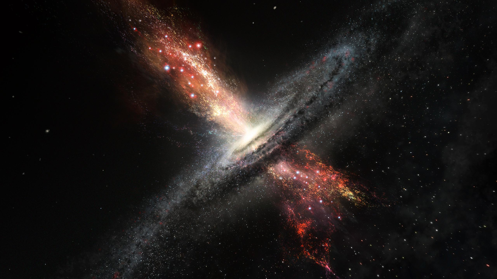

Bienvenido!
¡Bienvenidos al blog de astronomía! Aquí encontrarás todo lo que
necesitas saber sobre el universo y el espacio. Desde el sistema solar
hasta los agujeros negros, estamos aquí para explorar y descubrir
juntos. Únete a nosotros en este viaje fascinante a través de las
maravillas del cosmos.
Agujeros Negros
Un agujero negro es una región del espacio donde la gravedad es tan
intensa que nada, ni siquiera la luz, puede escapar de ella. Se forman
cuando una estrella muere y su núcleo colapsa bajo su propia gravedad.
Los agujeros negros tienen un tamaño variable, desde microscópicos
hasta supermasivos, y se encuentran en el centro de muchas galaxias,
incluyendo nuestra propia Vía Láctea. Aunque son fascinantes y
misteriosos, los agujeros negros también son objetos peligrosos, ya
que pueden absorber todo lo que se encuentre a su alrededor,
incluyendo estrellas y planetas. La exploración de los agujeros negros
sigue siendo uno de los mayores desafíos en la astronomía moderna.
